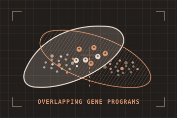

NicheRadar: spatial gene programs and multicellular organization
Discovering spatial gene programs from expression distributions and using them to study overlapping tissue functions and cell states.

Research question
Can the spatial distributions of genes reveal functional tissue organization and context-dependent cell states that are difficult to capture with a single tissue partition?
Approach
NicheRadar represents each gene's expression as a spatial probability distribution and compares distributions using exact Energy-MMD. A soft hyperedge representation groups related patterns into gene programs, which support downstream analysis of cellular composition, within-type state differences, and multicellular organization.
Current evidence
Accepted as a Regular Paper at IEEE BIBM 2026, forthcoming. Ovarian and prostate cancer analyses examine vascular, myeloid, metabolic, and stromal organization. Comparisons with spatial ecotypes explore functional localization across tissue contexts and variation within a shared ecotype. These analyses describe spatial RNA associations.
My contribution
- Contributed to the design of NicheRadar, using reproducing kernel Hilbert spaces and maximum mean discrepancy to identify spatial niches and cellular ecotypes in tissues.
- Responsible for running the method on datasets and analyzing the results.
- Provided analytical tools for downstream tasks, including cancer tissue analysis.
NicheRadar maps functional niches. A follow-up project asks whether differences in cell state now studied through ecotype analysis can be modelled directly. Related methods: Gene-program constraints for spatial mapping.